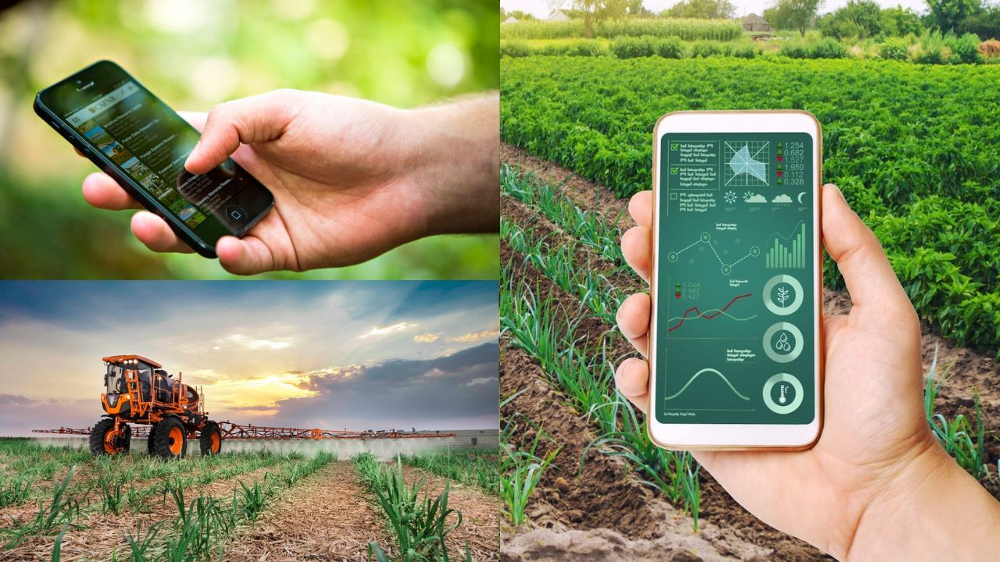
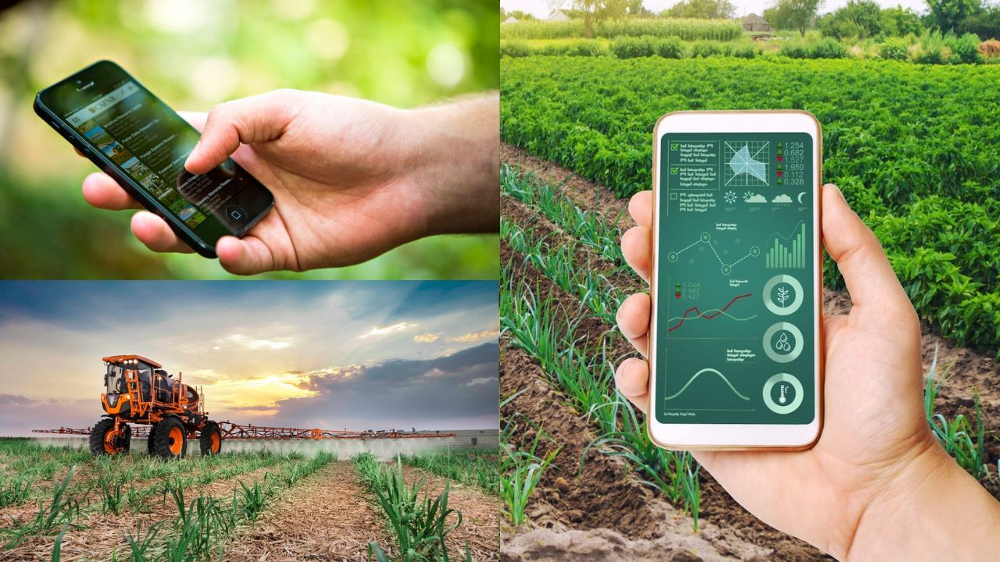

Inteligência Artifical Generativas, Entenda o que é:

Uma inteligência artificial generativa é uma tecnologia com capacidade de aprender a padrões complexos de comportamento a partir de uma base de dados. Com uma técnica chamada aprendizagem de máquina ("machine learning" em inglês), o IAs generativas como ChatGPT e DALL-E conseguem reproduzir conteúdos após receber treinamento.


 
